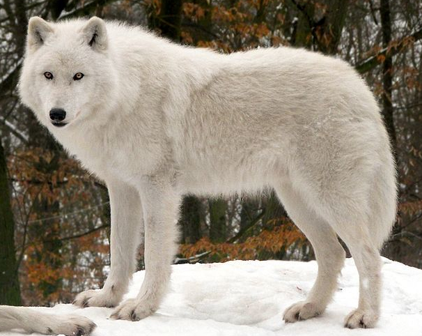

Allgemeine Infos
Gefürchtet, gejagt und in Märchen nimmt er meist die Rolle des Bösen ein: Der Wolf. Aber die Wahrheit hinter dem Raubtier sieht komplett anders aus. Wölfe leben in Rudeln, die ähnlich unserer menschlichen Familien sind. Sie besitzen eine natürliche Scheu vor Menschen und dass man einen Wolf in freier Wildbahn je zu gesicht bekommt ist eher unwahrscheinlich. Was ist also dieses Raubtier, das alle so fürchten? Sind die Geschichten wahr, oder doch nur Legenden?
Wie schon erwähnt, lebt der Wolf in Rudeln. Ein Rudel besteht in freier Wildbahn aus den Eltern und dem Nachwuchs. Meist entsteht der Eindruck dass es mehrere Erwachsene männliche und weibliche Tiere gibt, was jedoch daran liegt, dass die Welpen, also der Nachwuchs, schon mit wenigen Jahren ausgewachsen ist und man so deren Alter als Laie nur schwer abschätzen kann. Eine Durchmischung von Familienfremden kommt im Grunde nur in Wildparks und Zoos vor und ist in der freien Wildbahn im Normalfall nicht üblich.
Wölfe werden im Schnitt in freier Wildbahn um die 10 Jahre alt und in Gefangenschaft um die 4 - 5 Jahre älter. Meist sind die Weibchen kleiner als die männlichen Tiere, die auch 'Rüden' genannt werden. Ein Wolf wird mit etwa 2 Jahren Geschlechtsreif. Ab dem Zeitpunkt der Geschlechtsreife lösen sich die Welpen vom Rudel und gehen ihre eigenen Wege, um erneut einen Partner zu finden. Dabei reisen sie mehrere Kilometer und können Wochenlang unterwegs sein. Ein Revier eines Rudels kann sich ebenso über mehrere Kilometer erstrecken.